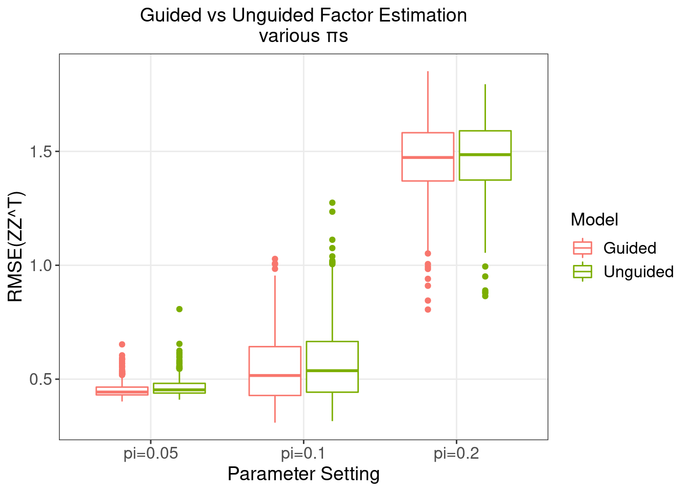

Evaluation of GSFA on Simulated Data
– Realistic Settings
Yifan Zhou (zhouyf@uchicago.edu)
2021-03-31
1 Simulation Settings
We simulated our data in a bottom-up fashion: \[G_{im} \overset{i.i.d.}{\sim} \text{Bern}(0.1),\hspace{3mm} \Phi_{ik} \overset{i.i.d.}{\sim} N(0, 1) \Rightarrow Z = G \beta + \Phi\] \[ F_{jk} \sim \text{Bern}(\pi_j),\hspace{3mm} U_{jk} \sim N(0, \sigma_w^2) \Rightarrow W = F \odot U\] \[E_{ij} \sim N(0,\psi_j), Z, W \Rightarrow Y = ZW^T+E\] \(G \in \mathbb{R}^{N \times M}, \beta \in \mathbb{R}^{M \times K}, Z \in \mathbb{R}^{N \times K}, W \in \mathbb{R}^{P \times K}, Y \in \mathbb{R}^{N \times P}.\)
For simulation cases in this report,
Sample size \(N = 4000\), gene number \(P = 6000\), factor number \(K = 10\), and guide/marker number \(M = 6\);
\(\sigma_w^2 = 0.5\), matrix \(\beta\) takes the following form:
The first 6 factors are each associated with a guide, with the effect sizes varying from 0.1 to 0.6, while the last 4 factors are not associated with any guides.
We explored 4 cases when the density parameter \(\pi_j\) is the same across \(j\) but takes a value from 0.1, 0.2, 0.5 to 0.8.
Under each scenario, 500 random datasets were simulated, and both guided and unguided GSFA models were performed on each dataset for 2000 iterations starting from SVD initialization; posterior means were averaged over the last 1000 iterations.
2 Estimation of Effect Sizes (\(\beta\)s)

3 Estimation of Factors (\(Z\)s)
We would like to evaluate how different our estimation of the factor matrix, \(\hat{Z}\), is from the true value \(Z\).
Since the order of latent factors is non-identifiable, we focus on \(ZZ^T\) and evaluate its estimation error using \(||\hat{Z}\hat{Z}^T - ZZ^T||_F/N\), where \(||\cdot||_F\) is the Frobenius norm, and \(N\) is the number of rows (samples) in \(Z\).

4 Beta PIP Calibration
4.1 \(\pi\) = 0.2


5 Gene Detection
5.1 Detection methods
- GSFA + Local False Sign Rate (LFSR)
In terms of our GSFA method, we can estimate the effect of a guide/marker on each gene by summarizing over all the factors through the local false sign rate (LFSR):
For gene \(j\) and guide \(m\), based on the posteriors of \(\beta\) and \(W\) of an inference, \[\text{LFSR}_{mj} = \text{min} \Big\{\text{Pr}(\sum_{k=1}^K \beta_{mk}W_{jk} \geq 0 \text{ | Data}), \text{Pr}(\sum_{k=1}^K \beta_{mk}W_{jk} \leq 0 \text{ | Data}) \Big\}\]
- Welch’s t-test + FDR
Alternatively, we can simply test each gene directly, measuring whether there is an difference in \(Y_j\) between the two groups of samples under guide \(m\) using Welch’s t-test.
To obtain the following ROC curves, we varied the cutoff from 0 to 1 on both LFSR and t-test FDR values.
The actual cutoff values used are (correspond to the datapoints on an ROC curve from left to right)
0, 0.01, 0.05, 0.1, 0.2, 0.3, 0.4, 0.5, 0.6, 0.7, 0.8, 0.9, 0.95, 1
5.2 \(\pi\) = 0.2
5.2.1 ROC

5.2.2 Precision-Recall

5.2.3 LFSR Calibration